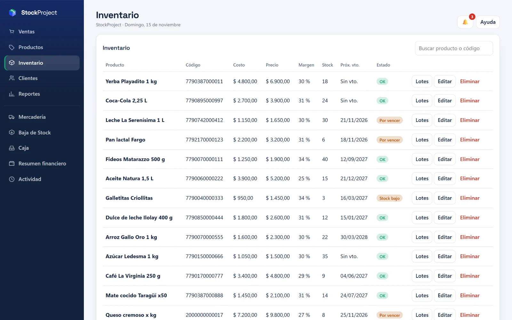
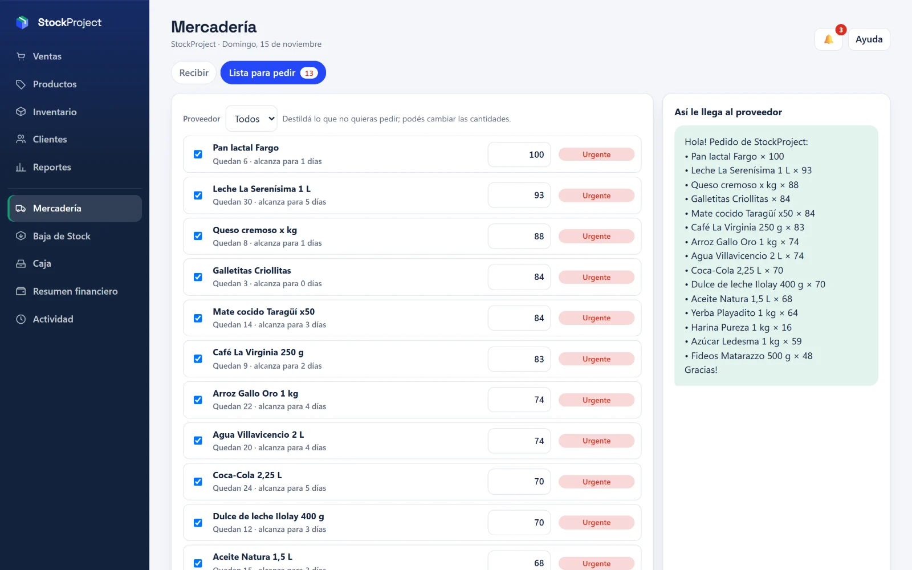

Lotes con aviso de vencimiento
Cargás lotes con su fecha y la campana te avisa antes. El stock bajo también se marca.
Cobrás con el escáner, cerrás la caja por turno y mirás el negocio desde el celular.
Pensado para kioscos
Programa para Windows, instalado en tu local de Rosario y alrededores.
Para kioscos, almacenes, verdulerías y otros comercios de barrio que hoy cobran con calculadora y llevan el stock en un cuaderno o una planilla.

Escaneás el código o tocás el producto, el total se arma solo y el vuelto aparece al instante. Efectivo, tarjeta o transferencia, y con F8 cobrás sin el mouse.

Cada cajero abre su turno con el cambio. Al cerrar contás el efectivo y el programa te dice si sobra o falta, con el detalle de ventas, ingresos y retiros.

Cargás los lotes con su fecha y el programa avisa antes del vencimiento. La lista para el proveedor se arma con lo que vendiste y sale por WhatsApp.
Cargás lotes con su fecha y la campana te avisa antes. El stock bajo también se marca.
Vendés al fiado con F7 y ves cuánto debe cada uno y qué pagó.

Cargás lo que trae el proveedor en un paso. La lista para pedir se arma con lo que vendés y sale por WhatsApp.

Gastos, retiros y pagos a proveedores quedan anotados, aparte de la caja del día.

Importás tus productos, clientes y saldos desde una planilla de Excel o un CSV. El programa revisa lo que cargás antes de guardarlo y, si algo salió mal, podés deshacer la importación.
En la visita lo hacemos juntos con la lista que ya tenés.
La PC manda una foto del día cada 30 segundos. Desde el celular ves ventas, caja y avisos, sin poder tocar nada.
Kiosco, almacén, verdulería, carnicería, cafetería, ropa y calzado, electrónica, mayorista, servicios, panadería, ferretería, farmacia, librería, pet shop, dietética, perfumería y heladería.

Se arma la venta con tres productos, el programa muestra el total a cobrar, se ingresa el efectivo recibido y aparece el vuelto antes de apretar Cobrar.
Se abre el cierre de caja, se carga el efectivo contado y el programa muestra la diferencia con lo esperado y el detalle del turno.
La lista para pedir se arma con lo que se vendió, se ajustan las cantidades y el pedido queda escrito como mensaje listo para mandarle al proveedor.
Vamos a tu local, lo dejamos funcionando y te enseñamos a usarlo con tus productos. El precio te lo contamos en la visita, según tu comercio y cuántas cajas usás.
Escribinos por WhatsApp, contanos qué vendés y cuántas cajas tenés, y coordinamos un día para ir a tu local.
Cliente
Darío tiene una distribuidora de productos capilares en Rosario y vende marcas como Protenay y Question. Usa StockProject para registrar las ventas, llevar el stock de cada producto y cerrar la caja.
Ejemplo
Ejemplo ilustrativo: no es un cliente real.
Así podría usarlo un kiosco de barrio: cobra con el escáner en el mostrador, marca los lácteos y golosinas que están por vencer y cierra la caja de cada turno viendo si sobra o falta.
No. Ventas, caja, stock, clientes y reportes funcionan sin conexión, porque los datos están en la PC. Internet solo hace falta para el panel del celular y las actualizaciones.
Windows 10 u 11 de 64 bits. Un lector de códigos USB que funcione como teclado anda en Ventas y en Mercadería.
Sí. Vamos a tu local en Rosario y alrededores, lo instalamos y te mostramos cómo usarlo.
Escribile por WhatsApp. Tus datos tienen respaldos automáticos y el programa se actualiza solo.
No. Esta página no usa cookies, ni analítica, ni recursos de otros sitios. Qué datos guarda el panel del celular está explicado en la política de privacidad.
Te lo contamos en la demo, según tu comercio y cuántas cajas usás.